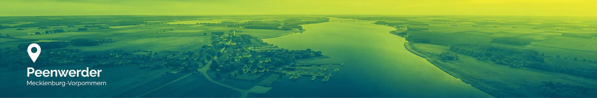
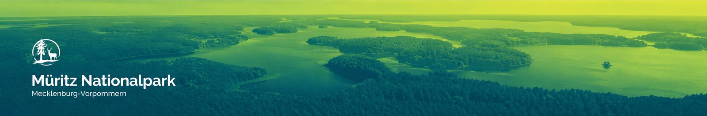

Meine Reviere
Wähle das Revier, in dem Du unterwegs bist.

eingerichtet PeenwerderHauptrevier, Nord, Nordrand, Ost
- Stände
- —
- Strecke Saison
- —
- Drückjagden
- —
- Jäger
- —

Stände fehlen nochBabke, Langenhagen, Schwarzenhof, Serrahn
- Stände
- 0
- Drückjagden
- —
- Karte
- —
Drückjagden für dieses Revier lassen sich schon planen — die Stände sind nur noch nicht in My Maps eingezeichnet, deshalb gibt es weder Karte noch Heatmap. Sobald sie drin sind, erscheint das Revier hier wie Peenwerder.
Drückjagden ansehen →Weitere Reviere kommen dazu. Ein Revier braucht seine Stände in Google My Maps — den Rest zieht die App sich selbst.